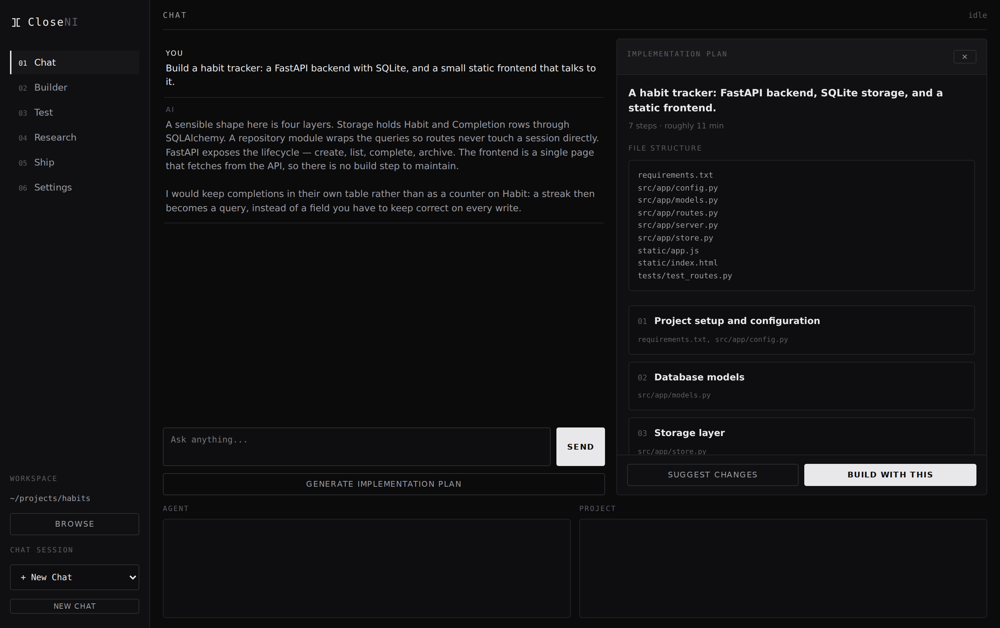
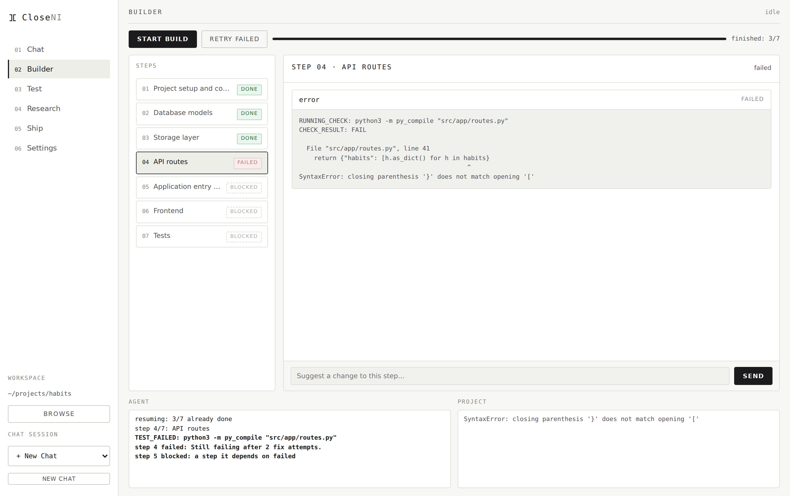
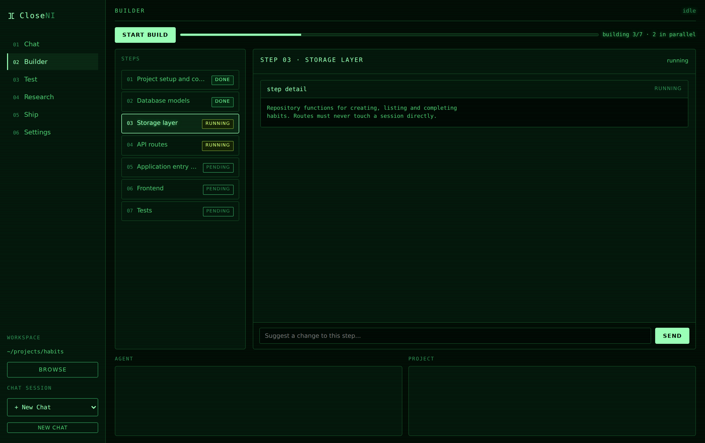
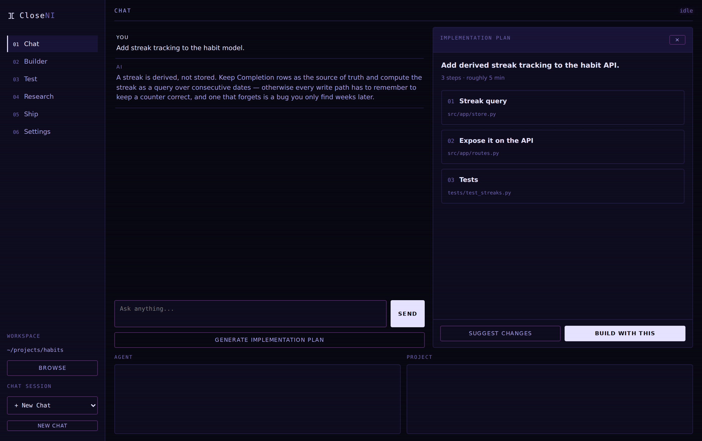

Every coding agent needs an API key. This one signs into the chat sites you already use — and drives them like an API.
CloseNI opens a real Chromium window, signs into DeepSeek, Qwen Studio or GLM as you, and keeps that session in a persistent profile. From then on it types prompts into the composer, waits for generation to finish, and reads the reply back out of the page.
What comes back is text. Turning that into a working project is the rest of the app: repairing not-quite-valid JSON, applying file changes with backups and workspace containment, choosing the right syntax check for each language, and feeding failures back to the model until they pass.
YOU CloseNI A CHAT SITE YOUR DISK
│ │ │ │
│ "build me a │ │ │
│ habit tracker" │ │ │
├───────────────────►│ │ │
│ │ plan this, as JSON │ │
│ ├─────────────────────────►│ │
│ │◄─────────────────────────┤ │
│ review the plan │ 7 steps, a dependency │ │
│◄───────────────────┤ graph, a run command │ │
│ approve │ │ │
├───────────────────►│ step 1 … │ │
│ ├─────────────────────────►│ │
│ │◄─────────────────────────┤ {"files":[…]} │
│ ├──────────────────────────┼──────────────────────►│
│ │ apply · syntax check │ files written │
│ │ │ │
│ │ steps 2 and 3 … │ │
│ ├═════════════════════════►│ (in parallel) │
│ │ step 4 failed │ │
│ ├──── error sent back ────►│ │
│ │◄─────────────────────────┤ fixed, passes │
These are real screenshots, generated from the app's own markup and stylesheet — not mock-ups. Switch the theme in the header and they follow.

The model decides how many steps a project takes — two for a script, twenty or more for an application — and declares which steps depend on which. Steps with no dependency between them run at the same time, in separate chat tabs.
serial, no graph with a declared graph, limit 2
1 ──► 2 ──► 3 ──► 4 ──► 5 ──► 6 1 ──┬──► 2 ──┐
├──► 3 ──┼──► 4 ──┬──► 6
~11 min └────────┘ └──► 5
~7 min
Only the conversations parallelise. Applying files, running syntax checks and asking for command approval all happen one at a time, behind a single lock. Two steps can talk at once; only one may write. That removes every shared-state race by construction rather than by careful locking — including the worst one, where two permission prompts race and the answer meant for one command is given to the other.
A failed syntax check is sent back to the model with the compiler's own output. It gets two attempts before the step is marked failed.
If a step fails, everything depending on it is marked blocked — it never ran, and saying it failed would claim something about code nobody executed.
Fix the problem and press Retry. The build continues from what already succeeded instead of starting over.
Each step sends only what the conversation has not already seen, so prompt size stays flat as a project grows instead of compounding.
A manifest at the project root claims its language and produces one project-level
check. Without one, every file is checked individually. Rust and Java cannot be
checked file by file — a .rs containing mod utils; fails
alone even when the crate is perfect — so guessing would fail code that was correct.
| Language | With a manifest | Without one |
|---|---|---|
| Rust | Cargo.toml → cargo check | rustc --emit=metadata |
| C / C++ | Makefile → make -n | gcc -fsyntax-only |
| Java | pom.xml · build.gradle | javac |
| Go | go.mod → go build ./... | gofmt -e |
| TypeScript | tsconfig.json → tsc --noEmit | tsc --noEmit |
| C# | *.csproj → dotnet build | — |
| Python | — | py_compile |
| JavaScript | — | node --check |
| Ruby · PHP · Shell | — | ruby -c · php -l · bash -n |
A missing toolchain skips the check rather than failing it. A machine with Python but no Rust should not fail a build for a problem it cannot solve.
Builds suggest shell commands, and a model will occasionally suggest installing a system package or piping a downloaded script into an interpreter. Some commands always prompt, whatever your permission setting says.
COMMAND_NEEDS_REVIEW: sudo apt install -y python3-venv COMMAND_DENIED: sudo apt install -y python3-venv ENVIRONMENT_COMMAND_SKIPPED: python3 -m venv venv Environment setup did not work here, continuing. step 2/7: Database models done
The list covers sudo, package managers, rm -rf,
dd, chmod 777, shutdown, and anything piping
curl or wget into a shell or interpreter — and it tests the
whole command, so hiding sudo behind || does not slip past.
Separately, a failed environment command no longer fails the build. A virtualenv that cannot be created is a fact about your machine, not about code that already compiled.
Every colour in the app is a token, enforced by a lint that fails the build if a literal appears outside a theme block — otherwise a theme reaches half the interface and looks broken in the other half.



The desktop app never touches a browser. The agent never touches a window. They speak JSON over stdio, which means the agent is a command-line program you can run by hand — and that is exactly how its end-to-end suite drives it, against a mock chat server with only the model's answers faked.
desktop/ Electron
main.js IPC · git · the GitHub token · spawns the agent
renderer.js panels, plan review, diffs, settings
builder.js the step scheduler
│
│ spawn, JSON over stdio
▼
local-agent/ TypeScript, one process per task
providers/ send · wait for generation · read the reply out of the DOM
+ a control module per provider (each UI differs in kind)
parser/ JSON repair for replies that are nearly valid
patch/ apply, with backups and workspace containment
verification/ syntax checks · command policy · the run manifest
│
▼
a real browser, signed in as you
Entry-point detection used to guess from filenames, so a project at
src/app/server.py matched nothing and the panel said
no entry point found — despite the model having declared the command
while planning.
Now the answer is written into the project. Reopen it next month, on another machine, and the Test panel already knows.
closeni.run.json — what the app readsrun.sh and run.bat — so it runs without CloseNI{
"version": 1,
"run": "python3 src/app/server.py",
"install": "pip install -r requirements.txt",
"userEdited": false
}
the Test panel shows where it came from:
SAVED from closeni.run.json
FROM YOUR PLAN the model declared it
DETECTED guessed from the files
NOT FOUND nothing to go on
| Platform | File | Notes |
|---|---|---|
| Windows | CloseNI-Setup-x.y.z.exe |
Unsigned, so SmartScreen warns. More info → Run anyway. |
| Linux | CloseNI-x.y.z.AppImage |
chmod +x, then run. No installation. |
| Debian · Ubuntu | closeni_x.y.z_amd64.deb |
sudo dpkg -i closeni_*.deb |
git clone https://github.com/siddarth1872004/CloseNI.git cd CloseNI npm install npm run build npx playwright install chromium cd desktop && npm start
First launch downloads a browser. CloseNI drives real browsers, so it fetches its own Chromium — about 389MB, once, kept in your user data directory. Bundling it would put half a gigabyte in every release.
Your provider session is a credential. Signing in stores a browser profile in your user data directory. Treat it like a password: it is git-ignored, and the packaging config uses an allow-list so it can never reach a release build.
The test suites prove the logic. They do not prove every path works on every machine, and it is worth saying which is which.
The roadmap, every design spec and every implementation plan — including the
decisions that were rejected and why — are in the repository under
docs/.